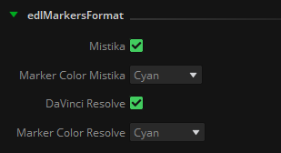
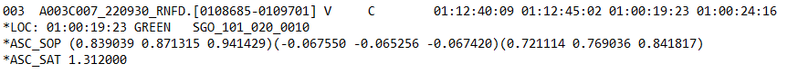
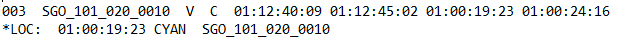
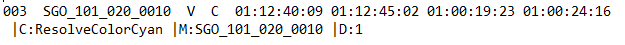
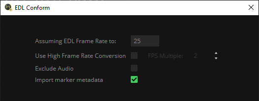
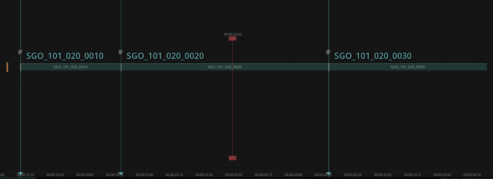
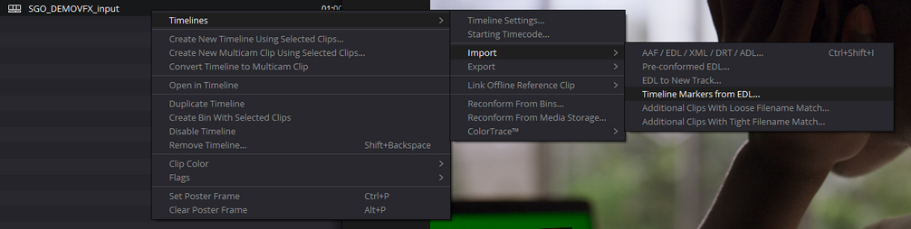
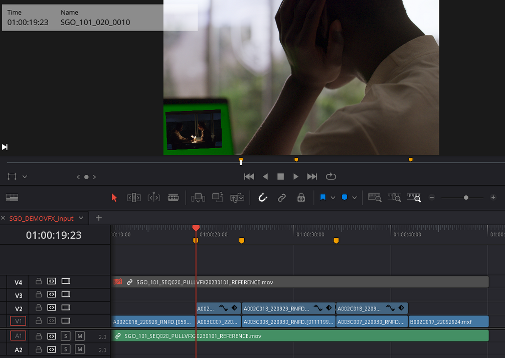

|
<< Click to Display Table of Contents >> EDL to Markers |
This node takes one or more EDL files (files with the .edl extension) and creates new EDL files for each of them. These new EDL files include markers tailored for specific formats like Mistika/Avid Media Composer or DaVinci Resolve. The names extracted from each event in the EDL works in a similar manner to the way detailed in the EDL to CC node, following the rules defined in the NamingMatchRules
The generated files will have the same file name as the processed EDL, adding as suffix ‘_edlMarkersDVR’ or ‘_edlMarkersMTK’, depending on the selected output format.
The color of the marker can also be defined for each output format (these colors vary from one software to another):

With a single EDL file provided as input and utilizing the NamingMatchRules for VFX name extraction, the resulting two EDLs will take on the following appearance:
Input: SGO_DEMOVFX_V1.edl

Output: SGO_DEMOVFX_V1_edlMarkersMTK.edl

Output: SGO_DEMOVFX_V1_edlMarkersDVR.edl

This node output can be used to:
•Conform back the exported VFX: As the Tapename of each EDL event is the VFX name itself, they can be conformed without handles directly in their place within the timeline edit.
•Import only the markers so all VFX are automatically located and marked in the timeline. Given that the shot naming has already been completed by the editorial department, there's no necessity to duplicate this effort during the process of preparing the sequence with the RAW material for color grading, export or review vfx. Especially where dozens of VFX shots have to be named, marked and processed, which is a really time consuming task.
In the case of Mistika is as easy as importing the EDL and activate the toggle ‘Import marker metadata’:

As a result we will automatically have all VFX marked and named in our timeline:

In the case of DaVinci Resolve the process is practically the same, just select ‘Timeline Markers from EDL’ in the Import options of any timeline:


•Feed the EDL Edit Changes node: This node evaluates two EDL files as input and looks for edit changes in every event, being these events all the VFX names matched with the EDL to Markers node. For more information about how it works consult the EDL Edit Changes node documentation.
edl: EDL files containing VFX naming information to be processed.
edlMarkers: .edl files containing color markers for each format selected in the ‘edlMarkersFormat’ property.
.
EDL Path: Folder to store the .edl files created by this node.
edlMarkersFormat: Toggles to select Mistika/Avid or DaVinciResolve format, and the desired color to be used for the markers in each format.
NamingMatchRules
LOC: Locator in the .edl events to extract the VFX name from: It can be a color marker from Avid Media Composer / Mistika / Adobe Premiere (RED, GREEN, BLUE, CYAN, MAGENTA, YELLOW, BLACK, WHITE), or the TapeName or FromClipName statements in the .edl event.
Shot Naming: A regular expression to match and extract the vfx name in the selected LOC